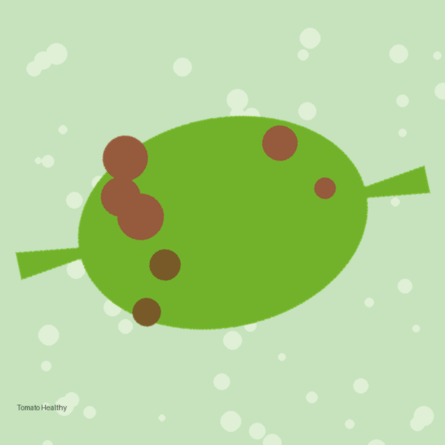
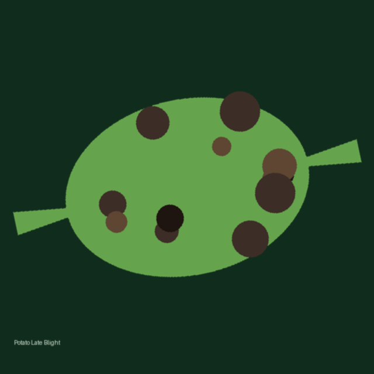
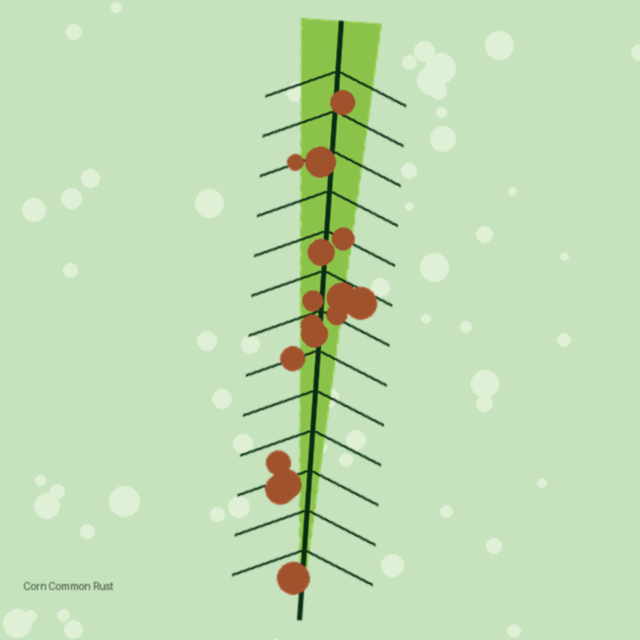
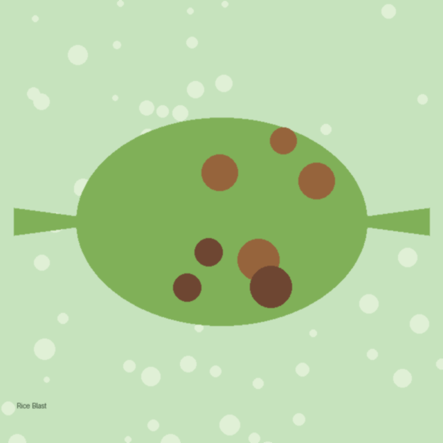
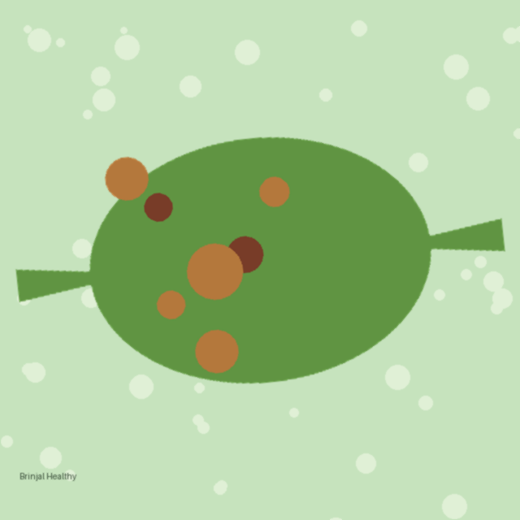
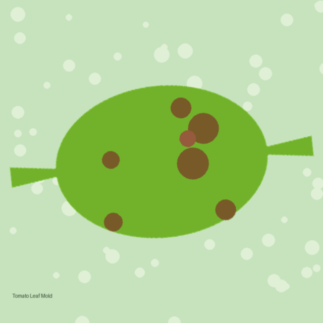
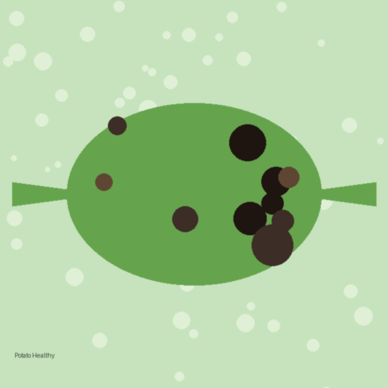
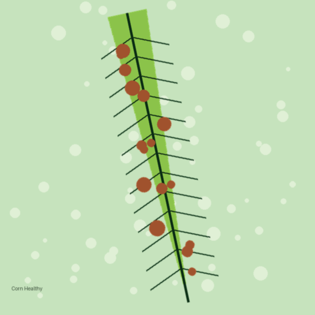
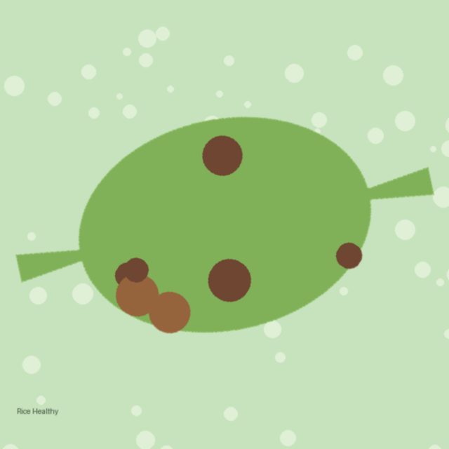
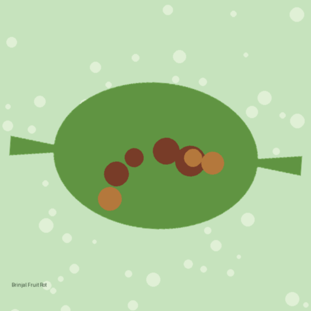

🎓 B.Tech Major Project · CNN Image Classifier
Upload a photo of any crop leaf and our AI — powered by a Convolutional Neural Network trained on 54,000+ images — instantly tells you the disease, the confidence, and the exact organic treatment to save your harvest.





20–40% of crops lost yearly to disease
$220B annual loss worldwide
1 photo · 2 seconds · 1 clear answer
Why AgriCare AI
Built for farmers, extension officers and students — expert-level diagnosis without the expert wait.
Disease name, confidence score and trusted treatment advice in under 2 seconds after upload.
A Convolutional Neural Network with transfer learning (MobileNetV2 / ResNet50) learns visual disease patterns.
Recommendations are eco-friendly and cost-effective — less pesticide, safer food, healthier soil.
See exactly how sure the model is, with the top three possibilities ranked for you.
Responsive design means a poor network farm connection can still reach the clinic.
Every scan is saved to your farmer account so you can track your farm's health across seasons.
How It Works
Point your phone at the affected leaf and snap a picture — any crop, any stage.
The image is resized to 256×256, normalized and augmented to match the training data.
Convolutional layers extract texture, colour and spot features; fully-connected layers score all classes.
Top match + confidence bar + symptoms + organic treatment plan — ready in 2 seconds.
Disease Library
A growing library of crop-disease pairs from the PlantVillage dataset — hover to see details.
Solanum lycopersicum

Fulvia fulva

Solanum tuberosum
Phytophthora infestans

Zea mays
Puccinia sorghi

Oryza sativa
Magnaporthe oryzae
Solanum melongena

Phomopsis vexans
Supported Crops
10 classes including Leaf Mold, Bacterial Spot, Yellow Leaf Curl Virus, Early Blight, Late Blight, Septoria Leaf Spot and healthy leaves.
Early Feedback
"In the village we wait days for an officer to visit. With this, I know by evening what to spray — and it is safer for my family."
— Ramesh P., smallholder farmer (survey)"Teaching plant pathology is hard without visuals. The disease library makes concepts click instantly for my students."
— Prof. Kavita S., Agriculture College"We trialled it during the kharif season on tomato. The confidence score helped us trust when to act and when to keep watching."
— KVK Extension Officer, PuneLogin as a farmer to run diagnoses and save every result to your personal dashboard.
📸 Diagnose a Leaf Now